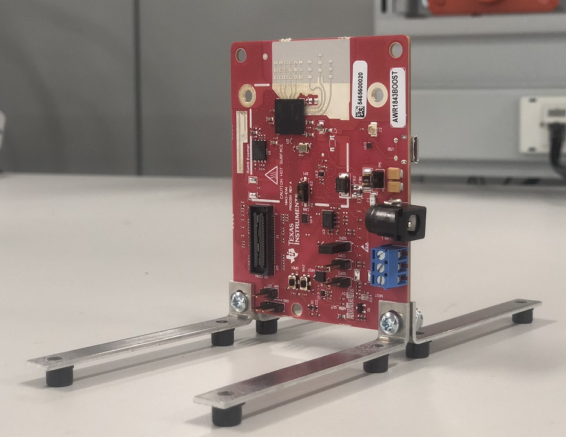
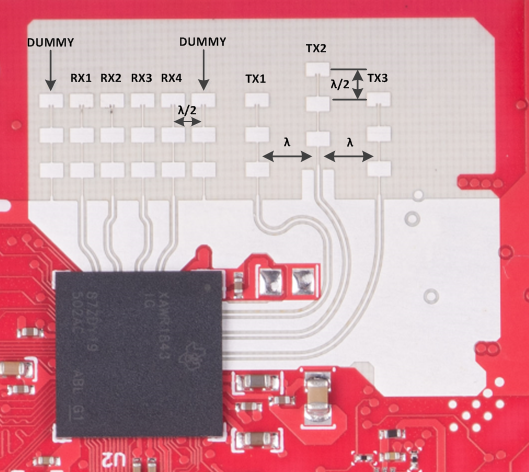
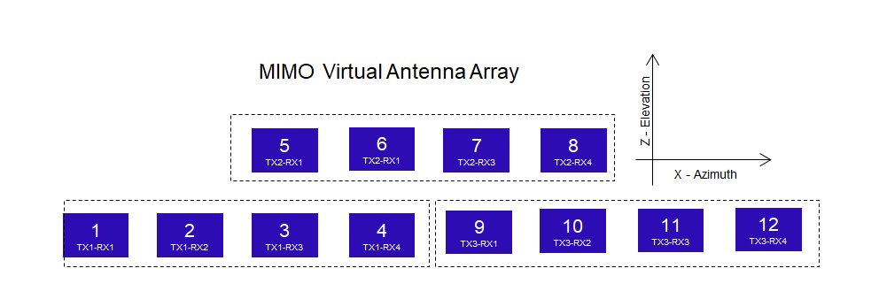
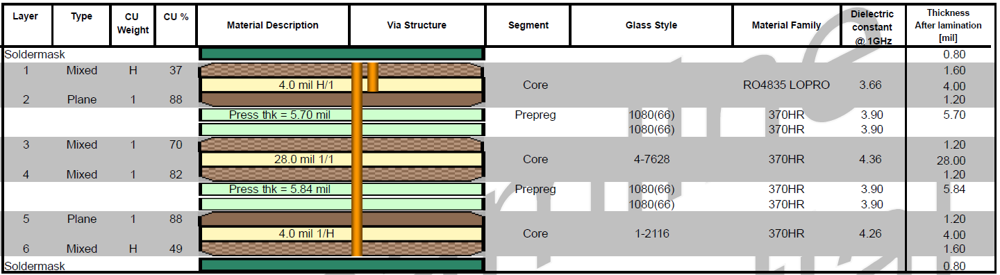
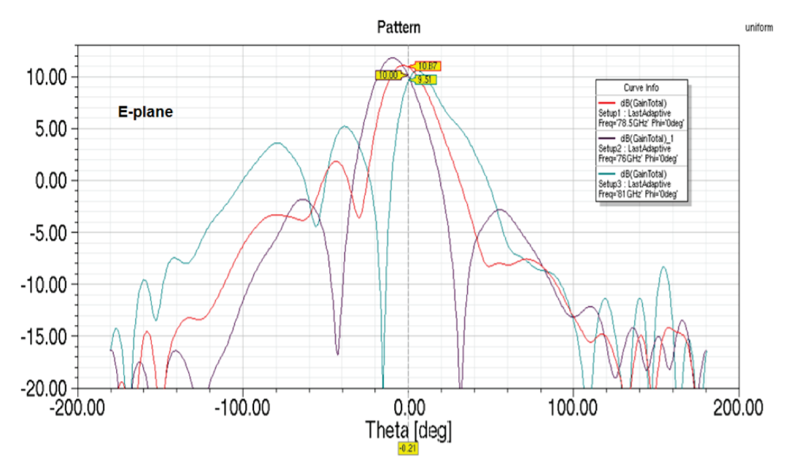
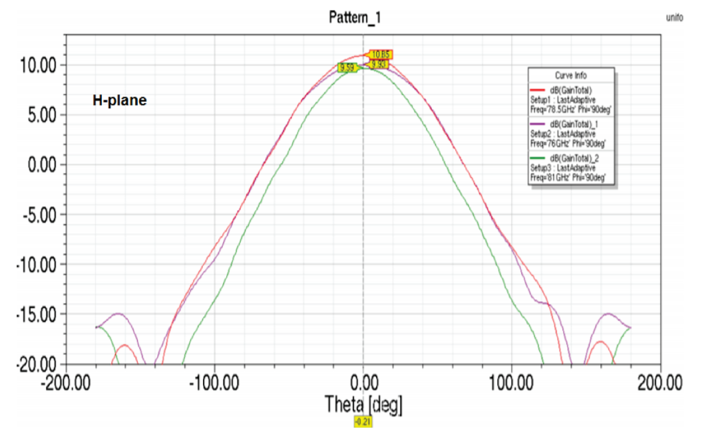

Introduction
============
IWR1843BOOST EVM antenna is designed to be operated in in 77GHz to 81GHz frequency range.
The use cases which can be addressed with this antenna are robotics, motion detection, heavy duty vehicles, factory automation, perimeter security etc.
<img src="images/power_optimized_level_transmitter.jpeg" width="400" class="img-responsive"/>
IWR1843BOOST EVM Antenna Picture & Dimensions
=============================================



The antenna peak gain of IWR1843BOOST EVM Antenna is about 7 dBi across the frequency band of 76 to 81 GHz.
For more details about this EVM, please refer to the following link:
http://www.ti.com/tool/iwr1843boost
IWR1843BOOST EVM Stackup
========================
Please refer to below PCB stackup details for IWR1843BOOST Antenna.

The mmWave layer is Rogers RO4835 with LoPro copper. ED (electro-deposited) copper is not a suitable material for mmWave frequencies.
Detailed layout of this antenna with stackup are available for you to download and reuse at the following link:
http://www.ti.com/lit/zip/sprr371
Simulated Radiation Patterns
============================
Simulated radiation patterns of IWR1843BOOST EVM Antenna for Elevation and Azimuth can be seen below.


In the above pictures X axis represents the angle (in degrees) and Y axis represents the gain (in dB).
Manufacturing Guidelines
========================
The details on manufacturing this antenna can be found in the “TI mmWave Radar Sensor RF PCB Design, Manufacturing and Validation Guide" - http://www.ti.com/lit/pdf/spracg5
Board Manufacturer
==================
Streamline Circuits - http://streamlinecircuits.com/
Material Details
================
Rogers Corporation - https://www.rogerscorp.com/documents/2269/acs/RO4835-Laminate-Data-Sheet.pdf